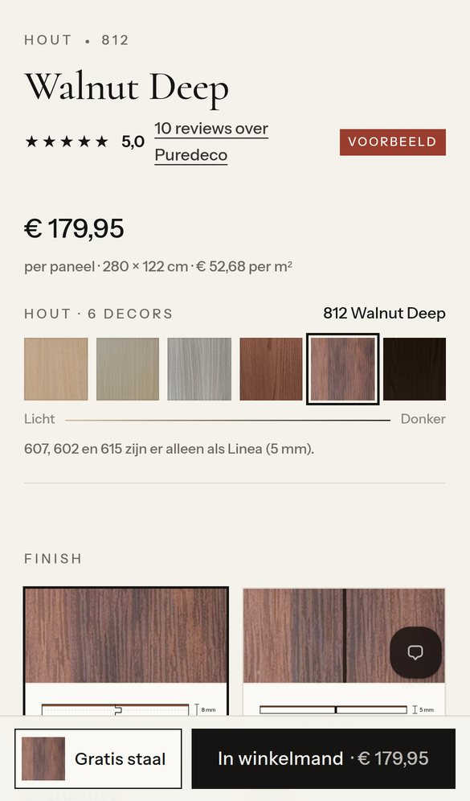
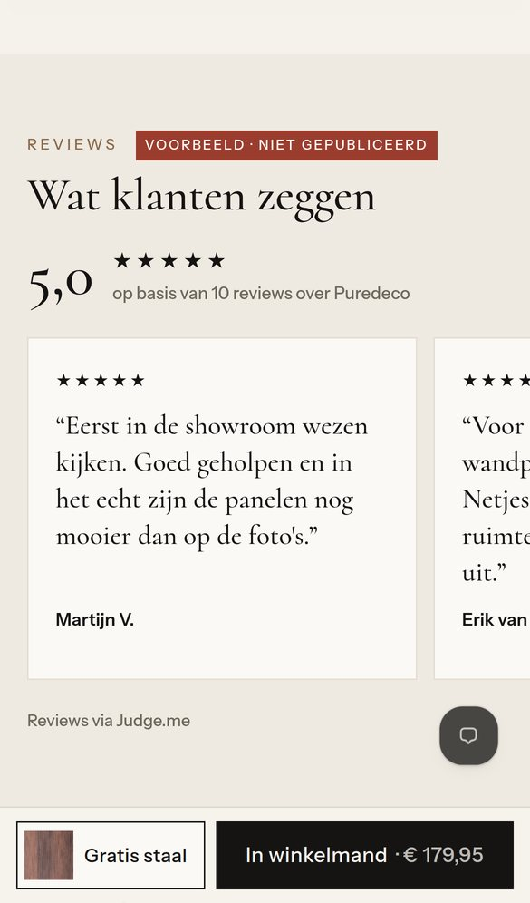
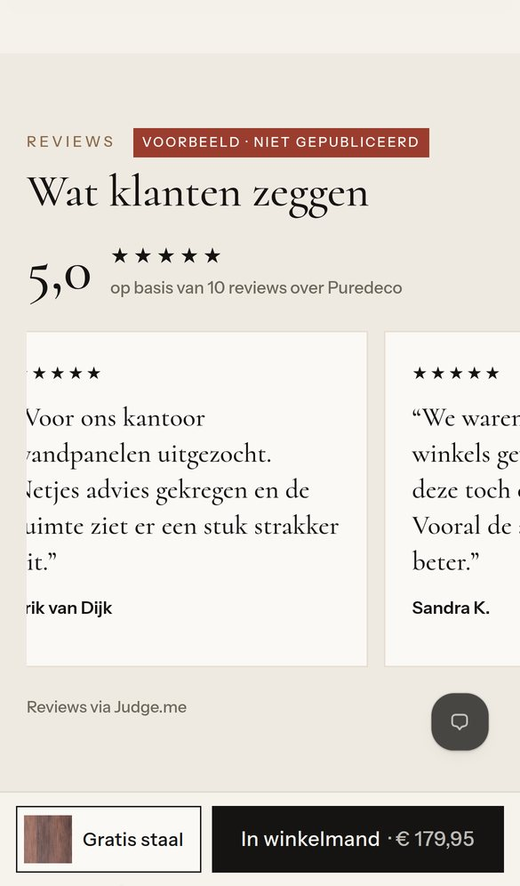
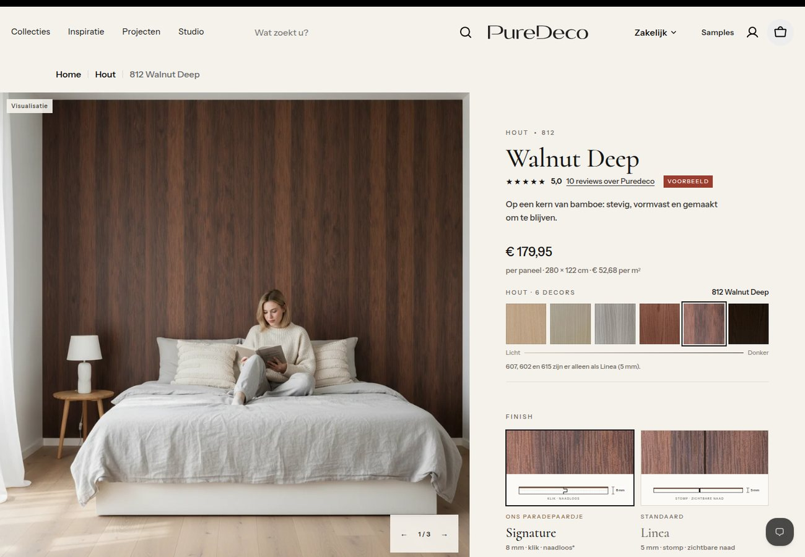
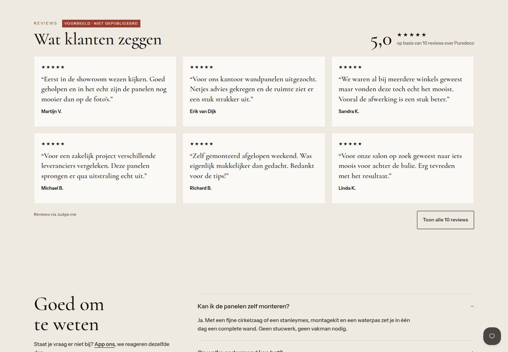

Artboard · gesimuleerd op de echte H1-test-pagina van 812 Walnut Deep · niets gepubliceerd
Zo komen reviews eruit te zien op de productpagina van 812 Walnut Deep: sterren onder de naam en een blok "Wat klanten zeggen" boven de vragen. De tien teksten zijn de teksten die je aanleverde, gemarkeerd als Voorbeeld.
Waarom het label Voorbeeld: in je eerdere bericht stond dat deze tien namen en beoordelingen verzonnen zijn. Daarom publiceer ik ze niet. Ze gaan ook niet over 812 zelf, maar over de showroom, het advies en de montage. Daarom staan ze hier als reviews "over Puredeco" en niet als reviews van dit decor.
Mobiel

Onder de naam: ★★★★★ 5,0 · "10 reviews over Puredeco". Een tik scrolt naar het reviewblok.

Wat klanten zeggen: het gemiddelde, het aantal en de reviews als kaarten om door te swipen.

Swipen door alle reviews. De koopbalk blijft staan.
Desktop


Zes reviews in drie kolommen, met de knop "Toon alle 10 reviews". Het blok staat tussen "Vergelijk de houttinten" en "Goed om te weten".
Judge.me is al geïnstalleerd. Reviews lopen daar doorheen, zodat ze ook in Google met sterren kunnen verschijnen. Het blok op de pagina krijgt de stijl hierboven.
Gaat een review over 812, dan komt hij bij 812. Gaat hij over de showroom, het advies of de service, dan wordt het een winkelreview. Die staat op elke productpagina en op de homepage.
Per review: naam zoals die getoond mag worden, datum, sterren, tekst, het decor (als het daarover gaat) en het e-mailadres van de bestelling. Judge.me koppelt die aan de bestelling en toont dan "Geverifieerde koper".
Volgende stap